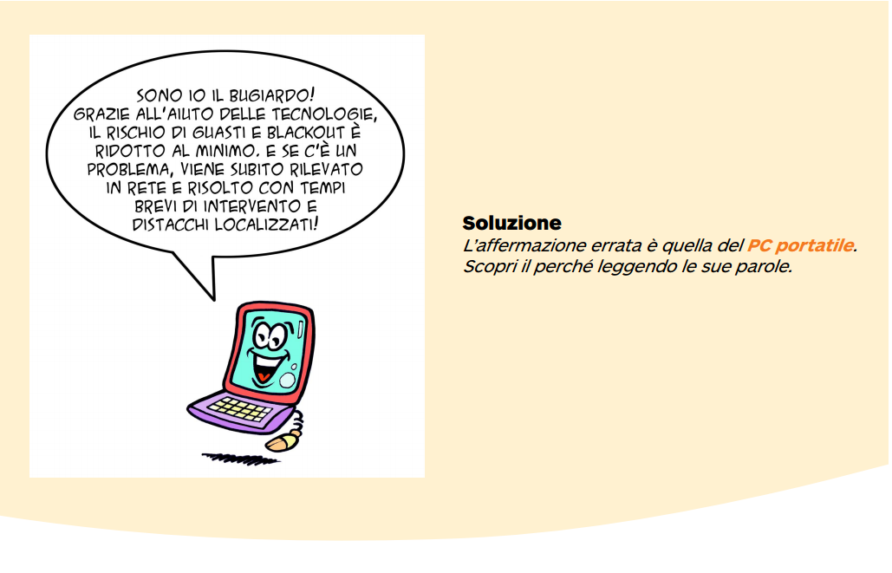

Le reti smart
Alcune applicazioni sono già diffuse: ad esempio, con il meccanismo delle fasce orarie, è possibile far pagare meno l'energia nelle ore di minor utilizzo e dare un incentivo a chi produce nelle ore di punta; i contatori intelligenti (smart meters), dispositivi che consentono la telelettura e l'accesso in tempo reale ai dati di consumo, ci sono ormai familiari.
Ed altre si stanno diffondendo... Qualche esempio?
La riorganizzazione della rete e la creazione di punti di ricarica consentirà un uso massivo dell'energia da fonti rinnovabili per la mobilità elettrica: gli accumulatori delle auto elettriche possono assorbire e utilizzare i picchi di produzione da fonti non programmabili. In sintesi, lo sviluppo di reti intelligenti fornirà un importante contributo per rendere più ecologiche e smart le nostre città e consentirà di partecipare sempre più attivamente alla lotta contro i cambiamenti climatici.
|  |
Soluzione |